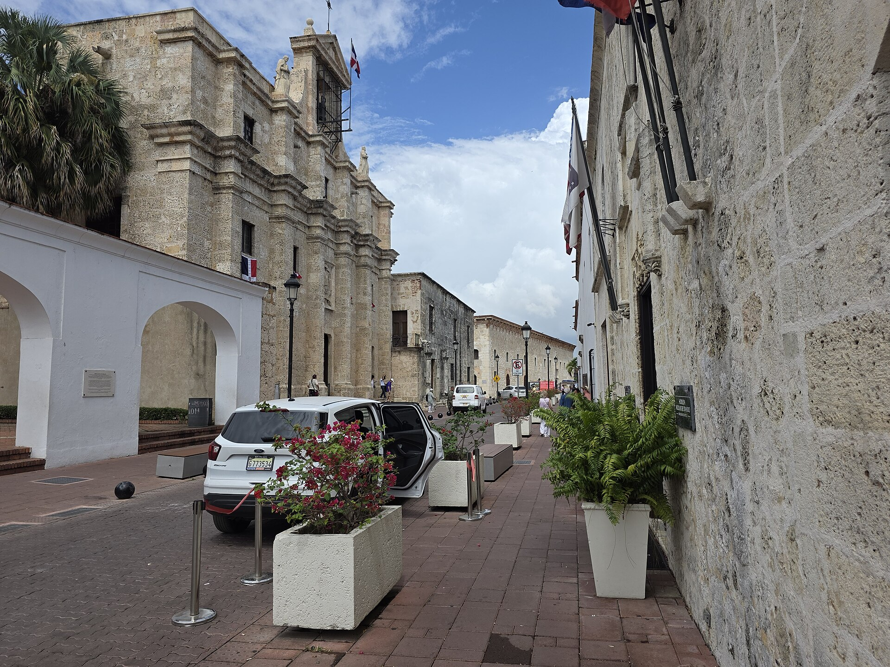

Música que se ve
Cualquier app de «Reproduciendo»: Música, Spotify, Podcasts o tu navegador. Portada, controles, letras sincronizadas y un vidrio que toma el color del álbum.

Música con letras, Bandeja con AirDrop, calendario, portapapeles, terminal y actividades en vivo, justo debajo de tu cámara. Nativa, en Liquid Glass. Gratis y de código abierto.
Esto es Isla de verdad, capturada en un MacBook Pro. Pasa el puntero por el notch, cambia de pestaña, arrastra un archivo o enciende una actividad en vivo.


Psst… es interactiva. Arrastra un archivo al notch.
Carga, AirPods con su batería, volumen y brillo, descargas, reuniones, temporizadores y tu canción. Aparecen alrededor del notch y se van solas.
Todo lo que esperarías de la mejor app del notch, y un par de cosas que no.
Cualquier app de «Reproduciendo»: Música, Spotify, Podcasts o tu navegador. Portada, controles, letras sincronizadas y un vidrio que toma el color del álbum.
Arrastra al notch y los archivos esperan en la Bandeja. AirDrop, compartir y convertir a PNG, JPEG, HEIC, PDF, MP4 o ZIP. ¿Lejos del notch? Agita el puntero y aparece un Bolsillo.


Historial con búsqueda, filtros y fijados. Nunca guarda contraseñas.

iCloud, Google y Exchange, con botón para unirte a Zoom, Meet o Teams.

Tu shell bajo el notch. Sigue corriendo aunque cierres el panel.

Pomodoro, temporizadores, cronómetro y ruido marrón generado en tu Mac.

Un teleprompter justo bajo el lente que avanza a tu ritmo o sigue tu voz, con reconocimiento en tu Mac.

Mantén el Mac despierto, toma un color, captura a la Bandeja, bloquea o cambia a modo oscuro.

El Liquid Glass de macOS deja ver tu fondo a través de la isla. El negro clásico la funde con la cámara. Desliza para comparar.

Swift y SwiftUI, el Liquid Glass del sistema, SF Symbols, respuesta háptica y unos Ajustes que se sienten como Ajustes del Sistema. Sin Electron, sin vistas web.


Sin versión Pro, sin prueba de 48 horas, sin suscripción y sin límite de Macs.
Isla es libre y de código abierto bajo la licencia MIT. Lee el código, propón mejoras o crea tu propia versión.
Diseñada y desarrollada por Kyros Solutions RD en Santo Domingo, en una isla del Caribe. De ahí el nombre.
# Compila Isla en un minuto
git clone https://github.com/Kyros-Solutions-RD/isla.git
cd isla
brew install xcodegen
xcodegen generate
open Isla.xcodeproj
Sí. Todas las funciones son gratis, para siempre, sin prueba ni suscripción. El código está en GitHub bajo la licencia MIT.
Cualquier Mac con macOS 26 Tahoe o posterior, con Apple silicon o Intel. Isla usa el Liquid Glass del sistema, por eso requiere Tahoe.
Isla dibuja una isla equivalente en la parte superior de cualquier pantalla, incluidos los monitores externos. Tú eliges en qué pantallas aparece.
Con cualquier app que aparezca en «Reproduciendo» del Centro de control: Música, Spotify, Podcasts, YouTube en el navegador y más. Las letras vienen de LRCLIB, una base de datos abierta.
Solo los que tú actives: Calendario, Recordatorios, Cámara para el Espejo, Ubicación para el clima, Micrófono para el teleprompter y Accesibilidad para el indicador de volumen. Nada sale de tu Mac salvo el clima con ubicación aproximada, la búsqueda de letras y la comprobación de actualizaciones.
Las versiones de la comunidad se firman sin un certificado de pago de Apple. Abre Ajustes del Sistema › Privacidad y seguridad, baja hasta el final, pulsa «Abrir igualmente» y confirma. Solo se hace una vez. O compílala tú desde el código fuente.
Isla busca actualizaciones una vez al día y te avisa en la propia isla; se instalan con un clic. Todo lo que cambia está en Novedades. Puedes desactivar la búsqueda en Ajustes.
Abre el .dmg, arrastra Isla a Aplicaciones y lleva el puntero al notch.
Descargar gratis